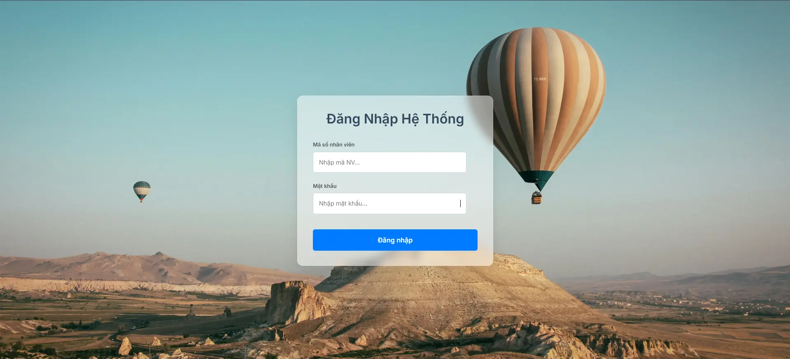
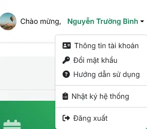
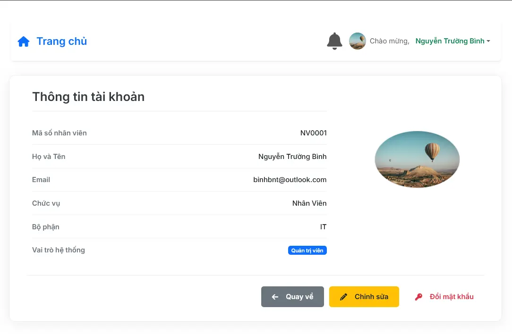
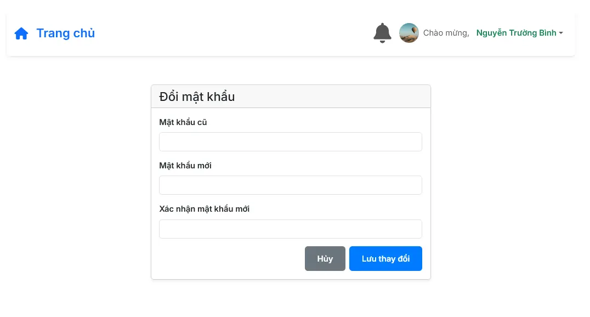
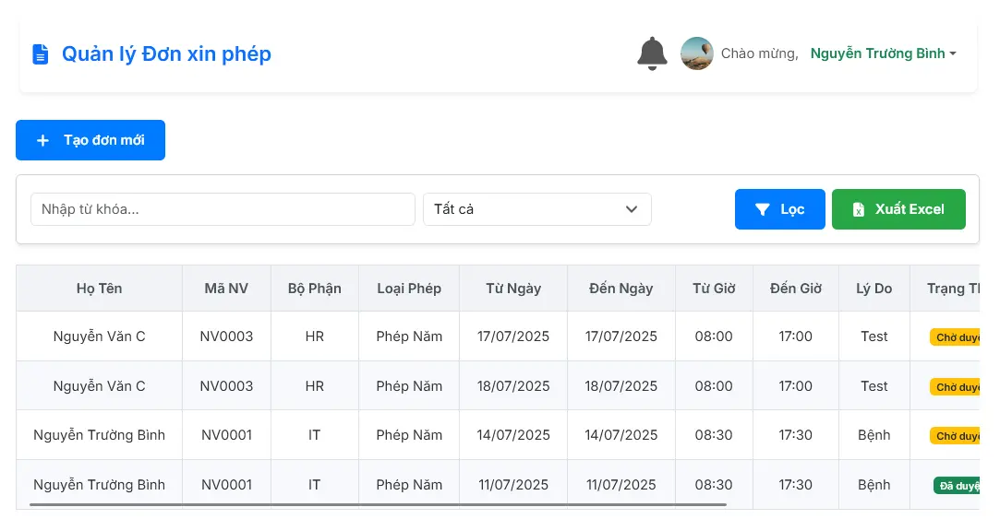
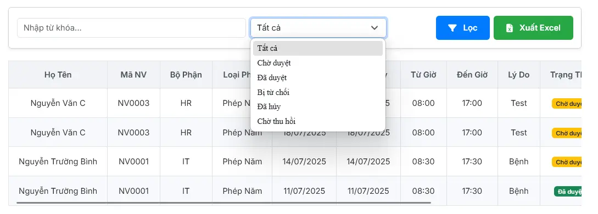

Hướng Dẫn Sử Dụng
Tài liệu này cung cấp hướng dẫn về các tính năng dành cho tài khoản nhân viên.
1. Các Chức Năng Cơ Bản
Đăng nhập & Menu tài khoản
Sử dụng Mã số nhân viên và Mật khẩu để truy cập. Sau khi đăng nhập, menu ở góc trên bên phải cho phép truy cập nhanh các tính năng:
- Thông tin tài khoản: Xem và chỉnh sửa thông tin cá nhân của bạn.
- Đổi mật khẩu: Thay đổi mật khẩu đăng nhập của bạn.
- Đăng xuất: Thoát khỏi phiên làm việc.


Trang thông tin tài khoản & Đổi mật khẩu
Bạn có thể truy cập trang Thông tin tài khoản của mình để xem các thông tin như Mã NV, Chức vụ, Bộ phận và thay đổi ảnh đại diện. Tại đây, bạn có thể nhấn "Chỉnh sửa" để cập nhật thông tin hoặc "Đổi mật khẩu".


2. Màn Hình Chính (Dashboard)
Đây là trang tổng quan, cung cấp cái nhìn về tình hình nghỉ phép và đơn từ của chính bạn.
- Thống kê ngày phép: Các thẻ số liệu hiển thị tổng số ngày phép được hưởng, đã nghỉ và còn lại của **bạn** trong năm.
- Tổng quan Đơn từ: Thống kê nhanh số lượng đơn của bạn theo từng trạng thái (Chờ duyệt, Đã duyệt, Từ chối, Đã hủy).
- Truy cập nhanh: Xem nhanh danh sách các đơn đang chờ duyệt, các đơn vừa được duyệt hoặc vừa bị từ chối/hủy của bạn.
3. Quản Lý Đơn Nghỉ Phép
Tại đây, bạn có thể xem và quản lý tất cả các đơn xin nghỉ phép của mình.
- Tạo đơn mới: Nhấn nút "+ Tạo đơn mới" để điền thông tin và gửi đơn xin nghỉ phép.
- Theo dõi trạng thái: Xem trạng thái các đơn đã gửi (Chờ duyệt, Đã duyệt, Bị từ chối...).
- Lọc & Tìm kiếm: Sử dụng bộ lọc trạng thái và ô tìm kiếm để nhanh chóng tìm thấy đơn của bạn.

